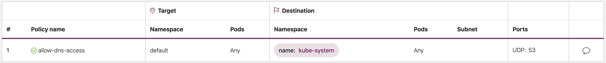
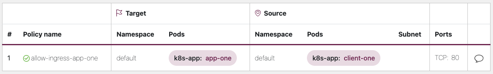
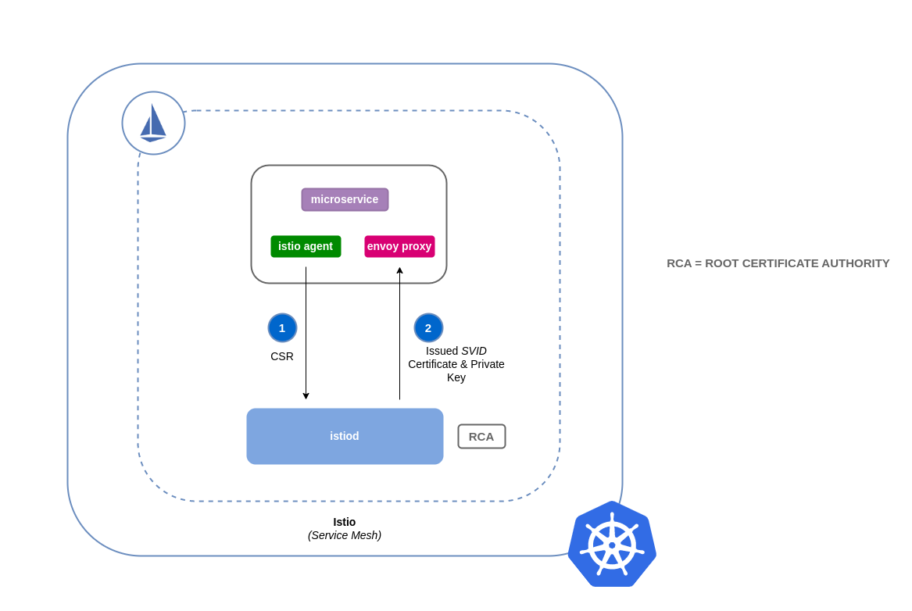
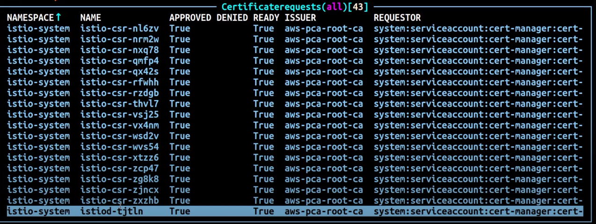

We've Moved to the AWS Docs! 🚀
This content has been updated and relocated to improve your experience. Please visit our new site for the latest version: AWS EKS Best Practices Guide on the AWS Docs
Bookmarks and links will continue to work, but we recommend updating them for faster access in the future.
Network security¶
Network security has several facets. The first involves the application of rules which restrict the flow of network traffic between services. The second involves the encryption of traffic while it is in transit. The mechanisms to implement these security measures on EKS are varied but often include the following items:
Traffic control¶
- Network Policies
- Security Groups
Network encryption¶
- Service Mesh
- Container Network Interfaces (CNIs)
- Ingress Controllers and Load Balancers
- Nitro Instances
- ACM Private CA with cert-manager
Network policy¶
Within a Kubernetes cluster, all Pod to Pod communication is allowed by default. While this flexibility may help promote experimentation, it is not considered secure. Kubernetes network policies give you a mechanism to restrict network traffic between Pods (often referred to as East/West traffic) as well as between Pods and external services. Kubernetes network policies operate at layers 3 and 4 of the OSI model. Network policies use pod, namespace selectors and labels to identify source and destination pods, but can also include IP addresses, port numbers, protocols, or a combination of these. Network Policies can be applied to both Inbound or Outbound connections to the pod, often called Ingress and Egress rules.
With native network policy support of Amazon VPC CNI Plugin, you can implement network policies to secure network traffic in kubernetes clusters. This integrates with the upstream Kubernetes Network Policy API, ensuring compatibility and adherence to Kubernetes standards. You can define policies using different identifiers supported by the upstream API. By default, all ingress and egress traffic is allowed to a pod. When a network policy with a policyType Ingress is specified, only allowed connections into the pod are those from the pod's node and those allowed by the ingress rules. Same applies for egress rules. If multiple rules are defined, then union of all rules are taken into account when making the decision. Thus, order of evaluation does not affect the policy result.
Attention
When you first provision an EKS cluster, VPC CNI Network Policy functionality is not enabled by default. Ensure you deployed supported VPC CNI Add-on version and set ENABLE_NETWORK_POLICY flag to true on the vpc-cni add-on to enable this. Refer Amazon EKS User guide for detailed instructions.
Recommendations¶
Getting Started with Network Policies - Follow Principle of Least Privilege¶
Create a default deny policy¶
As with RBAC policies, it is recommended to follow least privileged access principles with network policies. Start by creating a deny all policy that restricts all inbound and outbound traffic with in a namespace.
apiVersion: networking.k8s.io/v1
kind: NetworkPolicy
metadata:
name: default-deny
namespace: default
spec:
podSelector: {}
policyTypes:
- Ingress
- Egress

Tip
The image above was created by the network policy viewer from Tufin.
Create a rule to allow DNS queries¶
Once you have the default deny all rule in place, you can begin layering on additional rules, such as a rule that allows pods to query CoreDNS for name resolution.
apiVersion: networking.k8s.io/v1
kind: NetworkPolicy
metadata:
name: allow-dns-access
namespace: default
spec:
podSelector:
matchLabels: {}
policyTypes:
- Egress
egress:
- to:
- namespaceSelector:
matchLabels:
kubernetes.io/metadata.name: kube-system
podSelector:
matchLabels:
k8s-app: kube-dns
ports:
- protocol: UDP
port: 53

Incrementally add rules to selectively allow the flow of traffic between namespaces/pods¶
Understand the application requirements and create fine-grained ingress and egress rules as needed. Below example shows how to restrict ingress traffic on port 80 to app-one from client-one. This helps minimize the attack surface and reduces the risk of unauthorized access.
apiVersion: networking.k8s.io/v1
kind: NetworkPolicy
metadata:
name: allow-ingress-app-one
namespace: default
spec:
podSelector:
matchLabels:
k8s-app: app-one
policyTypes:
- Ingress
ingress:
- from:
- podSelector:
matchLabels:
k8s-app: client-one
ports:
- protocol: TCP
port: 80

Monitoring network policy enforcement¶
- Use Network Policy editor
- Network policy editor helps with visualizations, security score, autogenerates from network flow logs
- Build network policies in an interactive way
- Audit Logs
- Regularly review audit logs of your EKS cluster
- Audit logs provide wealth of information about what actions have been performed on your cluster including changes to network policies
- Use this information to track changes to your network policies over time and detect any unauthorized or unexpected changes
- Automated testing
- Implement automated testing by creating a test environment that mirrors your production environment and periodically deploy workloads that attempt to violate your network policies.
- Monitoring metrics
- Configure your observability agents to scrape the prometheus metrics from the VPC CNI node agents, that allows to monitor the agent health, and sdk errors.
- Audit Network Policies regularly
- Periodically audit your Network Policies to make sure that they meet your current application requirements. As your application evolves, an audit gives you the opportunity to remove redundant ingress, egress rules and make sure that your applications don't have excessive permissions.
- Ensure Network Policies exists using Open Policy Agent (OPA)
- Use OPA Policy like shown below to ensure Network Policy always exists before onboarding application pods. This policy denies onboarding k8s pods with a label
k8s-app: sample-appif corresponding network policy does not exist.
package kubernetes.admission
import data.kubernetes.networkpolicies
deny[msg] {
input.request.kind.kind == "Pod"
pod_label_value := {v["k8s-app"] | v := input.request.object.metadata.labels}
contains_label(pod_label_value, "sample-app")
np_label_value := {v["k8s-app"] | v := networkpolicies[_].spec.podSelector.matchLabels}
not contains_label(np_label_value, "sample-app")
msg:= sprintf("The Pod %v could not be created because it is missing an associated Network Policy.", [input.request.object.metadata.name])
}
contains_label(arr, val) {
arr[_] == val
}
Troubleshooting¶
Monitor the vpc-network-policy-controller, node-agent logs¶
Enable the EKS Control plane controller manager logs to diagnose the network policy functionality. You can stream the control plane logs to a CloudWatch log group and use CloudWatch Log insights to perform advanced queries. From the logs, you can view what pod endpoint objects are resolved to a Network Policy, reconcilation status of the policies, and debug if the policy is working as expected.
In addition, Amazon VPC CNI allows you to enable the collection and export of policy enforcement logs to Amazon Cloudwatch from the EKS worker nodes. Once enabled, you can leverage CloudWatch Container Insights to provide insights on your usage related to Network Policies.
Amazon VPC CNI also ships an SDK that provides an interface to interact with eBPF programs on the node. The SDK is installed when the aws-node is deployed onto the nodes. You can find the SDK binary installed under /opt/cni/bin directory on the node. At launch, the SDK provides support for fundamental functionalities such as inspecting eBPF programs and maps.
Log network traffic metadata¶
AWS VPC Flow Logs captures metadata about the traffic flowing through a VPC, such as source and destination IP address and port along with accepted/dropped packets. This information could be analyzed to look for suspicious or unusual activity between resources within the VPC, including Pods. However, since the IP addresses of pods frequently change as they are replaced, Flow Logs may not be sufficient on its own. Calico Enterprise extends the Flow Logs with pod labels and other metadata, making it easier to decipher the traffic flows between pods.
Security groups¶
EKS uses AWS VPC Security Groups (SGs) to control the traffic between the Kubernetes control plane and the cluster's worker nodes. Security groups are also used to control the traffic between worker nodes, and other VPC resources, and external IP addresses. When you provision an EKS cluster (with Kubernetes version 1.14-eks.3 or greater), a cluster security group is automatically created for you. This security group allows unfettered communication between the EKS control plane and the nodes from managed node groups. For simplicity, it is recommended that you add the cluster SG to all node groups, including unmanaged node groups.
Prior to Kubernetes version 1.14 and EKS version eks.3, there were separate security groups configured for the EKS control plane and node groups. The minimum and suggested rules for the control plane and node group security groups can be found at https://docs.aws.amazon.com/eks/latest/userguide/sec-group-reqs.html. The minimum rules for the control plane security group allows port 443 inbound from the worker node SG. This rule is what allows the kubelets to communicate with the Kubernetes API server. It also includes port 10250 for outbound traffic to the worker node SG; 10250 is the port that the kubelets listen on. Similarly, the minimum node group rules allow port 10250 inbound from the control plane SG and 443 outbound to the control plane SG. Finally there is a rule that allows unfettered communication between nodes within a node group.
If you need to control communication between services that run within the cluster and service the run outside the cluster such as an RDS database, consider security groups for pods. With security groups for pods, you can assign an existing security group to a collection of pods.
Warning
If you reference a security group that does not exist prior to the creation of the pods, the pods will not get scheduled.
You can control which pods are assigned to a security group by creating a SecurityGroupPolicy object and specifying a PodSelector or a ServiceAccountSelector. Setting the selectors to {} will assign the SGs referenced in the SecurityGroupPolicy to all pods in a namespace or all Service Accounts in a namespace. Be sure you've familiarized yourself with all the considerations before implementing security groups for pods.
Important
If you use SGs for pods you must create SGs that allow port 53 outbound to the cluster security group. Similarly, you must update the cluster security group to accept port 53 inbound traffic from the pod security group.
Important
The limits for security groups still apply when using security groups for pods so use them judiciously.
Important
You must create rules for inbound traffic from the cluster security group (kubelet) for all of the probes configured for pod.
Important
Security groups for pods relies on a feature known as ENI trunking which was created to increase the ENI density of an EC2 instance. When a pod is assigned to an SG, a VPC controller associates a branch ENI from the node group with the pod. If there aren't enough branch ENIs available in a node group at the time the pod is scheduled, the pod will stay in pending state. The number of branch ENIs an instance can support varies by instance type/family. See https://docs.aws.amazon.com/eks/latest/userguide/security-groups-for-pods.html#supported-instance-types for further details.
While security groups for pods offers an AWS-native way to control network traffic within and outside of your cluster without the overhead of a policy daemon, other options are available. For example, the Cilium policy engine allows you to reference a DNS name in a network policy. Calico Enterprise includes an option for mapping network policies to AWS security groups. If you've implemented a service mesh like Istio, you can use an egress gateway to restrict network egress to specific, fully qualified domains or IP addresses. For further information about this option, read the three part series on egress traffic control in Istio.
When to use Network Policy vs Security Group for Pods?¶
When to use Kubernetes network policy¶
- Controlling pod-to-pod traffic
- Suitable for controlling network traffic between pods inside a cluster (east-west traffic)
- Control traffic at the IP address or port level (OSI layer 3 or 4)
When to use AWS Security groups for pods (SGP)¶
- Leverage existing AWS configurations
- If you already have complex set of EC2 security groups that manage access to AWS services and you are migrating applications from EC2 instances to EKS, SGPs can be a very good choice allowing you to reuse security group resources and apply them to your pods.
- Control access to AWS services
- Your applications running within an EKS cluster wants to communicate with other AWS services (RDS database), use SGPs as an efficient mechanism to control the traffic from the pods to AWS services.
- Isolation of Pod & Node traffic
- If you want to completely separate pod traffic from the rest of the node traffic, use SGP in
POD_SECURITY_GROUP_ENFORCING_MODE=strictmode.
Best practices using Security groups for pods and Network Policy¶
- Layered security
- Use a combination of SGP and kubernetes network policy for a layered security approach
- Use SGPs to limit network level access to AWS services that are not part of a cluster, while kubernetes network policies can restrict network traffic between pods inside the cluster
- Principle of least privilege
- Only allow necessary traffic between pods or namespaces
- Segment your applications
- Wherever possible, segment applications by the network policy to reduce the blast radius if an application is compromised
- Keep policies simple and clear
- Kubernetes network policies can be quite granular and complex, its best to keep them as simple as possible to reduce the risk of misconfiguration and ease the management overhead
- Reduce the attack surface
- Minimize the attack surface by limiting the exposure of your applications
Attention
Security Groups for pods provides two enforcing modes: strict and standard. You must use standard mode when using both Network Policy and Security Groups for pods features in an EKS cluster.
When it comes to network security, a layered approach is often the most effective solution. Using kubernetes network policy and SGP in combination can provide a robust defense-in-depth strategy for your applications running in EKS.
Service Mesh Policy Enforcement or Kubernetes network policy¶
A service mesh is a dedicated infrastructure layer that you can add to your applications. It allows you to transparently add capabilities like observability, traffic management, and security, without adding them to your own code.
Service mesh enforces policies at Layer 7 (application) of OSI model whereas kubernetes network policies operate at Layer 3 (network) and Layer 4 (transport). There are many offerings in this space like AWS AppMesh, Istio, Linkerd, etc.,
When to use Service mesh for policy enforcement¶
- Have existing investment in a service mesh
- Need more advanced capabilities like traffic management, observability & security
- Traffic control, load balancing, circuit breaking, rate limiting, timeouts etc.
- Detailed insights into how your services are performing (latency, error rates, requests per second, request volumes etc.)
- You want to implement and leverage service mesh for security features like mTLS
Choose Kubernetes network policy for simpler use cases¶
- Limit which pods can communicate with each other
- Network policies require fewer resources than a service mesh making them a good fit for simpler use cases or for smaller clusters where the overhead of running and managing a service mesh might not be justified
Tip
Network policies and Service mesh can also be used together. Use network policies to provide a baseline level of security and isolation between your pods and then use a service mesh to add additional capabilities like traffic management, observability and security.
ThirdParty Network Policy Engines¶
Consider a Third Party Network Policy Engine when you have advanced policy requirements like Global Network Policies, support for DNS Hostname based rules, Layer 7 rules, ServiceAccount based rules, and explicit deny/log actions, etc., Calico, is an open source policy engine from Tigera that works well with EKS. In addition to implementing the full set of Kubernetes network policy features, Calico supports extended network polices with a richer set of features, including support for layer 7 rules, e.g. HTTP, when integrated with Istio. Calico policies can be scoped to Namespaces, Pods, service accounts, or globally. When policies are scoped to a service account, it associates a set of ingress/egress rules with that service account. With the proper RBAC rules in place, you can prevent teams from overriding these rules, allowing IT security professionals to safely delegate administration of namespaces. Isovalent, the maintainers of Cilium, have also extended the network policies to include partial support for layer 7 rules, e.g. HTTP. Cilium also has support for DNS hostnames which can be useful for restricting traffic between Kubernetes Services/Pods and resources that run within or outside of your VPC. By contrast, Calico Enterprise includes a feature that allows you to map a Kubernetes network policy to an AWS security group, as well as DNS hostnames.
You can find a list of common Kubernetes network policies at https://github.com/ahmetb/kubernetes-network-policy-recipes. A similar set of rules for Calico are available at https://docs.projectcalico.org/security/calico-network-policy.
Migration to Amazon VPC CNI Network Policy Engine¶
To maintain consistency and avoid unexpected pod communication behavior, it is recommended to deploy only one Network Policy Engine in your cluster. If you want to migrate from 3P to VPC CNI Network Policy Engine, we recommend converting your existing 3P NetworkPolicy CRDs to the Kubernetes NetworkPolicy resources before enabling VPC CNI network policy support. And, test the migrated policies in a separate test cluster before applying them in you production environment. This allows you to identify and address any potential issues or inconsistencies in pod communication behavior.
Migration Tool¶
To assist in your migration process, we have developed a tool called K8s Network Policy Migrator that converts your existing Calico/Cilium network policy CRDs to Kubernetes native network policies. After conversion you can directly test the converted network policies on your new clusters running VPC CNI network policy controller. The tool is designed to help you streamline the migration process and ensure a smooth transition.
Important
Migration tool will only convert 3P policies that are compatible with native kubernetes network policy api. If you are using advanced network policy features offered by 3P plugins, Migration tool will skip and report them.
Please note that migration tool is currently not supported by AWS VPC CNI Network policy engineering team, it is made available to customers on a best-effort basis. We encourage you to utilize this tool to facilitate your migration process. In the event that you encounter any issues or bugs with the tool, we kindly ask you create a GitHub issue. Your feedback is invaluable to us and will assist in the continuous improvement of our services.
Additional Resources¶
- Kubernetes & Tigera: Network Policies, Security, and Audit
- Calico Enterprise
- Cilium
- NetworkPolicy Editor an interactive policy editor from Cilium
- Inspektor Gadget advise network-policy gadget Suggests network policies based on an analysis of network traffic
Encryption in transit¶
Applications that need to conform to PCI, HIPAA, or other regulations may need to encrypt data while it is in transit. Nowadays TLS is the de facto choice for encrypting traffic on the wire. TLS, like it's predecessor SSL, provides secure communications over a network using cryptographic protocols. TLS uses symmetric encryption where the keys to encrypt the data are generated based on a shared secret that is negotiated at the beginning of the session. The following are a few ways that you can encrypt data in a Kubernetes environment.
Nitro Instances¶
Traffic exchanged between the following Nitro instance types, e.g. C5n, G4, I3en, M5dn, M5n, P3dn, R5dn, and R5n, is automatically encrypted by default. When there's an intermediate hop, like a transit gateway or a load balancer, the traffic is not encrypted. See Encryption in transit for further details on encryption in transit as well as the complete list of instances types that support network encryption by default.
Container Network Interfaces (CNIs)¶
WeaveNet can be configured to automatically encrypt all traffic using NaCl encryption for sleeve traffic, and IPsec ESP for fast datapath traffic.
Service Mesh¶
Encryption in transit can also be implemented with a service mesh like App Mesh, Linkerd v2, and Istio. AppMesh supports mTLS with X.509 certificates or Envoy's Secret Discovery Service(SDS). Linkerd and Istio both have support for mTLS.
The aws-app-mesh-examples GitHub repository provides walkthroughs for configuring mTLS using X.509 certificates and SPIRE as SDS provider with your Envoy container:
App Mesh also supports TLS encryption with a private certificate issued by AWS Certificate Manager (ACM) or a certificate stored on the local file system of the virtual node.
The aws-app-mesh-examples GitHub repository provides walkthroughs for configuring TLS using certificates issued by ACM and certificates that are packaged with your Envoy container:
Ingress Controllers and Load Balancers¶
Ingress controllers are a way for you to intelligently route HTTP/S traffic that emanates from outside the cluster to services running inside the cluster. Oftentimes, these Ingresses are fronted by a layer 4 load balancer, like the Classic Load Balancer or the Network Load Balancer (NLB). Encrypted traffic can be terminated at different places within the network, e.g. at the load balancer, at the ingress resource, or the Pod. How and where you terminate your SSL connection will ultimately be dictated by your organization's network security policy. For instance, if you have a policy that requires end-to-end encryption, you will have to decrypt the traffic at the Pod. This will place additional burden on your Pod as it will have to spend cycles establishing the initial handshake. Overall SSL/TLS processing is very CPU intensive. Consequently, if you have the flexibility, try performing the SSL offload at the Ingress or the load balancer.
Use encryption with AWS Elastic load balancers¶
The AWS Application Load Balancer (ALB) and Network Load Balancer (NLB) both have support for transport encryption (SSL and TLS). The alb.ingress.kubernetes.io/certificate-arn annotation for the ALB lets you to specify which certificates to add to the ALB. If you omit the annotation the controller will attempt to add certificates to listeners that require it by matching the available AWS Certificate Manager (ACM) certificates using the host field. Starting with EKS v1.15 you can use the service.beta.kubernetes.io/aws-load-balancer-ssl-cert annotation with the NLB as shown in the example below.
apiVersion: v1
kind: Service
metadata:
name: demo-app
namespace: default
labels:
app: demo-app
annotations:
service.beta.kubernetes.io/aws-load-balancer-type: "nlb"
service.beta.kubernetes.io/aws-load-balancer-ssl-cert: "<certificate ARN>"
service.beta.kubernetes.io/aws-load-balancer-ssl-ports: "443"
service.beta.kubernetes.io/aws-load-balancer-backend-protocol: "http"
spec:
type: LoadBalancer
ports:
- port: 443
targetPort: 80
protocol: TCP
selector:
app: demo-app
---
kind: Deployment
apiVersion: apps/v1
metadata:
name: nginx
namespace: default
labels:
app: demo-app
spec:
replicas: 1
selector:
matchLabels:
app: demo-app
template:
metadata:
labels:
app: demo-app
spec:
containers:
- name: nginx
image: nginx
ports:
- containerPort: 443
protocol: TCP
- containerPort: 80
protocol: TCP
Following are additional examples for SSL/TLS termination.
- Securing EKS Ingress With Contour And Let's Encrypt The GitOps Way
- How do I terminate HTTPS traffic on Amazon EKS workloads with ACM?
Attention
Some Ingresses, like the AWS LB controller, implement the SSL/TLS using Annotations instead of as part of the Ingress Spec.
ACM Private CA with cert-manager¶
You can enable TLS and mTLS to secure your EKS application workloads at the ingress, on the pod, and between pods using ACM Private Certificate Authority (CA) and cert-manager, a popular Kubernetes add-on to distribute, renew, and revoke certificates. ACM Private CA is a highly-available, secure, managed CA without the upfront and maintenance costs of managing your own CA. If you are using the default Kubernetes certificate authority, there is an opportunity to improve your security and meet compliance requirements with ACM Private CA. ACM Private CA secures private keys in FIPS 140-2 Level 3 hardware security modules (very secure), compared with the default CA storing keys encoded in memory (less secure). A centralized CA also gives you more control and improved auditability for private certificates both inside and outside of a Kubernetes environment.
Short-Lived CA Mode for Mutual TLS Between Workloads¶
When using ACM Private CA for mTLS in EKS, it is recommended that you use short lived certificates with short-lived CA mode. Although it is possible to issue out short-lived certificates in the general-purpose CA mode, using short-lived CA mode works out more cost-effective (~75% cheaper than general mode) for use cases where new certificates need to be issued frequently. In addition to this, you should try to align the validity period of the private certificates with the lifetime of the pods in your EKS cluster. Learn more about ACM Private CA and its benefits here.
ACM Setup Instructions¶
Start by creating a Private CA by following procedures provided in the ACM Private CA tech docs. Once you have a Private CA, install cert-manager using regular installation instructions. After installing cert-manager, install the Private CA Kubernetes cert-manager plugin by following the setup instructions in GitHub. The plugin lets cert-manager request private certificates from ACM Private CA.
Now that you have a Private CA and an EKS cluster with cert-manager and the plugin installed, it's time to set permissions and create the issuer. Update IAM permissions of the EKS node role to allow access to ACM Private CA. Replace the <CA_ARN> with the value from your Private CA:
{
"Version": "2012-10-17",
"Statement": [
{
"Sid": "awspcaissuer",
"Action": [
"acm-pca:DescribeCertificateAuthority",
"acm-pca:GetCertificate",
"acm-pca:IssueCertificate"
],
"Effect": "Allow",
"Resource": "<CA_ARN>"
}
]
}
Service Roles for IAM Accounts, or IRSA can also be used. Please see the Additional Resources section below for complete examples.
Create an Issuer in Amazon EKS by creating a Custom Resource Definition file named cluster-issuer.yaml with the following text in it, replacing <CA_ARN> and <Region> information with your Private CA.
apiVersion: awspca.cert-manager.io/v1beta1
kind: AWSPCAClusterIssuer
metadata:
name: demo-test-root-ca
spec:
arn: <CA_ARN>
region: <Region>
Deploy the Issuer you created.
Your EKS cluster is configured to request certificates from Private CA. You can now use cert-manager's Certificate resource to issue certificates by changing the issuerRef field's values to the Private CA Issuer you created above. For more details on how to specify and request Certificate resources, please check cert-manager's Certificate Resources guide. See examples here.
ACM Private CA with Istio and cert-manager¶
If you are running Istio in your EKS cluster, you can disable the Istio control plane (specifically istiod) from functioning as the root Certificate Authority (CA), and configure ACM Private CA as the root CA for mTLS between workloads. If you're going with this approach, consider using the short-lived CA mode in ACM Private CA. Refer to the previous section and this blog post for more details.
How Certificate Signing Works in Istio (Default)¶
Workloads in Kubernetes are identified using service accounts. If you don't specify a service account, Kubernetes will automatically assign one to your workload. Also, service accounts automatically mount an associated token. This token is used by the service account for workloads to authenticate against the Kubernetes API. The service account may be sufficient as an identity for Kubernetes but Istio has its own identity management system and CA. When a workload starts up with its envoy sidecar proxy, it needs an identity assigned from Istio in order for it to be deemed as trustworthy and allowed to communicate with other services in the mesh.
To get this identity from Istio, the istio-agent sends a request known as a certificate signing request (or CSR) to the Istio control plane. This CSR contains the service account token so that the workload's identity can be verified before being processed. This verification process is handled by istiod, which acts as both the Registration Authority (or RA) and the CA. The RA serves as a gatekeeper that makes sure only verified CSR makes it through to the CA. Once the CSR is verified, it will be forwarded to the CA which will then issue a certificate containing a SPIFFE identity with the service account. This certificate is called a SPIFFE verifiable identity document (or SVID). The SVID is assigned to the requesting service for identification purposes and to encrypt the traffic in transit between the communicating services.

How Certificate Signing Works in Istio with ACM Private CA¶
You can use a cert-manager add-on called the Istio Certificate Signing Request agent (istio-csr) to integrate Istio with ACM Private CA. This agent allows Istio workloads and control plane components to be secured with cert manager issuers, in this case ACM Private CA. The istio-csr agent exposes the same service that istiod serves in the default config of validating incoming CSRs. Except, after verification, it will convert the requests into resources that cert manager supports (i.e. integrations with external CA issuers).
Whenever there's a CSR from a workload, it will be forwarded to istio-csr, which will request certificates from ACM Private CA. This communication between istio-csr and ACM Private CA is enabled by the AWS Private CA issuer plugin. Cert manager uses this plugin to request TLS certificates from ACM Private CA. The issuer plugin will communicate with the ACM Private CA service to request a signed certificate for the workload. Once the certificate has been signed, it will be returned to istio-csr, which will read the signed request, and return it to the workload that initiated the CSR.

Istio with Private CA Setup Instructions¶
- Start by following the same setup instructions in this section to complete the following:
- Create a Private CA
- Install cert-manager
- Install the issuer plugin
- Set permissions and create an issuer. The issuer represents the CA and is used to sign
istiodand mesh workload certificates. It will communicate with ACM Private CA. - Create an
istio-systemnamespace. This is where theistiod certificateand other Istio resources will be deployed. -
Install Istio CSR configured with AWS Private CA Issuer Plugin. You can preserve the certificate signing requests for workloads to verify that they get approved and signed (
preserveCertificateRequests=true).helm install -n cert-manager cert-manager-istio-csr jetstack/cert-manager-istio-csr \ --set "app.certmanager.issuer.group=awspca.cert-manager.io" \ --set "app.certmanager.issuer.kind=AWSPCAClusterIssuer" \ --set "app.certmanager.issuer.name=<the-name-of-the-issuer-you-created>" \ --set "app.certmanager.preserveCertificateRequests=true" \ --set "app.server.maxCertificateDuration=48h" \ --set "app.tls.certificateDuration=24h" \ --set "app.tls.istiodCertificateDuration=24h" \ --set "app.tls.rootCAFile=/var/run/secrets/istio-csr/ca.pem" \ --set "volumeMounts[0].name=root-ca" \ --set "volumeMounts[0].mountPath=/var/run/secrets/istio-csr" \ --set "volumes[0].name=root-ca" \ --set "volumes[0].secret.secretName=istio-root-ca" -
Install Istio with custom configurations to replace
istiodwithcert-manager istio-csras the certificate provider for the mesh. This process can be carried out using the Istio Operator.apiVersion: install.istio.io/v1alpha1 kind: IstioOperator metadata: name: istio namespace: istio-system spec: profile: "demo" hub: gcr.io/istio-release values: global: # Change certificate provider to cert-manager istio agent for istio agent caAddress: cert-manager-istio-csr.cert-manager.svc:443 components: pilot: k8s: env: # Disable istiod CA Sever functionality - name: ENABLE_CA_SERVER value: "false" overlays: - apiVersion: apps/v1 kind: Deployment name: istiod patches: # Mount istiod serving and webhook certificate from Secret mount - path: spec.template.spec.containers.[name:discovery].args[7] value: "--tlsCertFile=/etc/cert-manager/tls/tls.crt" - path: spec.template.spec.containers.[name:discovery].args[8] value: "--tlsKeyFile=/etc/cert-manager/tls/tls.key" - path: spec.template.spec.containers.[name:discovery].args[9] value: "--caCertFile=/etc/cert-manager/ca/root-cert.pem" - path: spec.template.spec.containers.[name:discovery].volumeMounts[6] value: name: cert-manager mountPath: "/etc/cert-manager/tls" readOnly: true - path: spec.template.spec.containers.[name:discovery].volumeMounts[7] value: name: ca-root-cert mountPath: "/etc/cert-manager/ca" readOnly: true - path: spec.template.spec.volumes[6] value: name: cert-manager secret: secretName: istiod-tls - path: spec.template.spec.volumes[7] value: name: ca-root-cert configMap: defaultMode: 420 name: istio-ca-root-cert -
Deploy the above custom resource you created.
-
Now you can deploy a workload to the mesh in your EKS cluster and enforce mTLS.

Tools and resources¶
- Amazon EKS Security Immersion Workshop - Network security
- How to implement cert-manager and the ACM Private CA plugin to enable TLS in EKS.
- Setting up end-to-end TLS encryption on Amazon EKS with the new AWS Load Balancer Controller and ACM Private CA.
- Private CA Kubernetes cert-manager plugin on GitHub.
- Private CA Kubernetes cert-manager plugin user guide.
- How to use AWS Private Certificate Authority short-lived certificate mode
- egress-operator An operator and DNS plugin to control egress traffic from your cluster without protocol inspection
- NeuVector by SUSE open source, zero-trust container security platform, provides policy network rules, data loss prevention (DLP), web application firewall (WAF) and network threat signatures.